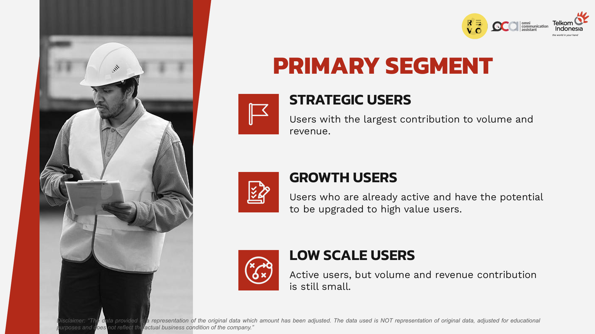
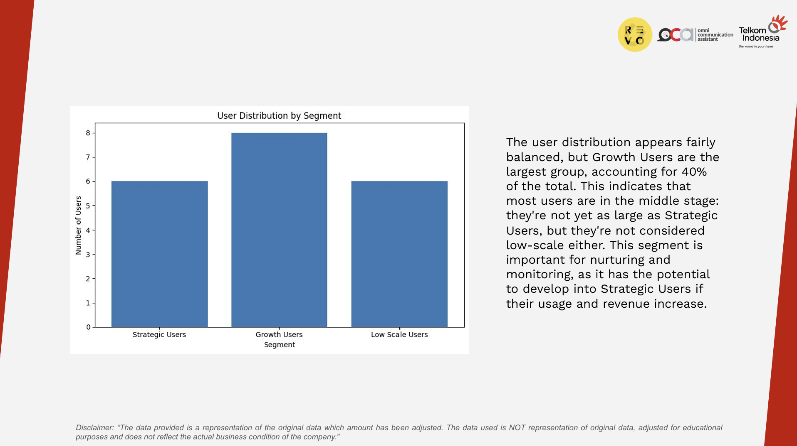
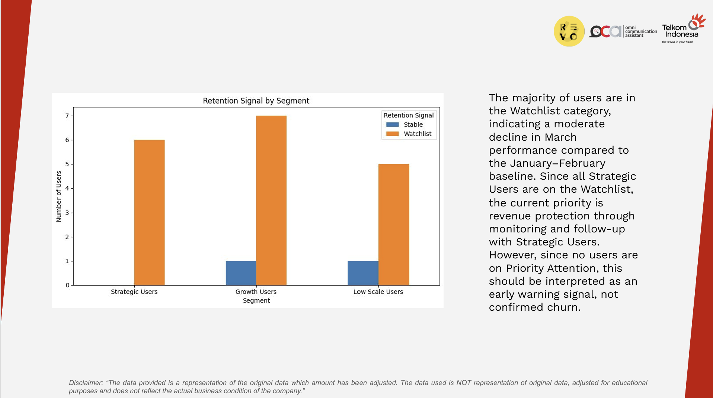
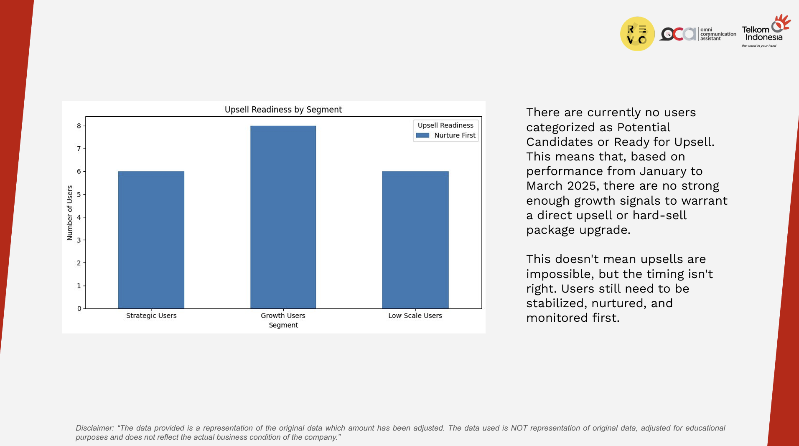

Disclaimer: The data provided is a representation of the original data which amount has been adjusted. The data used is NOT representation of original data, adjusted for educational purposes and does not reflect the actual business condition of the company.
OCA is a CPaaS platform that enables businesses to send messages through WhatsApp, SMS, Email, and Call. However, active users contribute unevenly to total messages and revenue, making it difficult for the company to decide which users should receive retention, nurturing, or upsell treatment. Without clear segmentation, all users may be treated the same, which can make personalization, churn prevention, and upsell strategies less effective. This project analyzes user behavior to identify high-value users, early decline signals, and potential growth opportunities.